Hollywood or Paris?
A Model of Spatial Demand for Movies’ Demand
Alessandra Cassar and Artur Minkin
The Hypothesis
In the first part we are modeling in a very simple way what may induce individuals in different locations to go and see a movie the first time it shows in a movie theater. None of them know the quality of the movie, therefore they need to take a decision based on whatever information they can gather. In our case, where all the agents are assumed to be arranged on a circle, each agent use the two most immediate right and left neighbors in order to infer some information about the quality of the movie. In particular, more neighbors are expected to go and see the movie, the higher the probability an agent is going to see the movie, either because he think neighbors have more information about the quality, or because it is simply more fun going to the movie theater with some companion. Everyone behaves exactly in the same way, so that unless there is something, which differs across location, agents at every location are expected to go to the movie theater exactly with the same probability. We found this result for the static equilibrium. On the other hand, if it is assumed that each location has a different cultural background, differences among locations become the norm.
There are many possible extensions. First would be interesting to change the structure of the interactions and observe how robust are the results. The best approach would be using a computational model and simulate our framework on a lattice. We expect to find interesting clustering or group behavior. Second it would be very interesting to model cultural diffusion and look for absorbing sets in which part of the population go and see the movie while other not, without any incentive for a single agent surrounded by agents having the same strategy to unilaterally change action. Also for this kind of problem, a computational model would constitute a better methodology.
Assumptions:
Randomness comes from 2 sources: movie quality is unknown and each individual
receives a random shock to his utility.
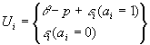
where p represent the price of the movie ticket.
The model:
Individual demand
Agent i chooses 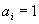 if:
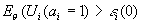
Each agent does not know before seeing the movie, so that he forms an expectation depending on whether the most immediate neighbors are expected to do. Neighbors are assumed to do the same. In particular each agent will expect:
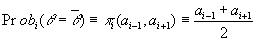
Since each agent does not know exactly what the neighbors are doing, he takes some expectation about their choices:
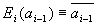 , 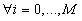.
Agent have rational expectations so that 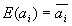.
The static equilibrium
Solving for the rational expectation equilibrium
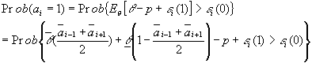
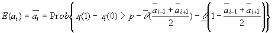
Since 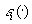 is assumed to be extreme valued distributed:
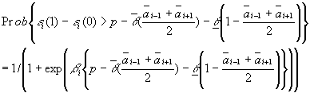
So that:
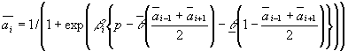
Symmetric Solution
If 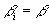 for every agent, then we obtain a unique symmetric solution, which means that all individuals form the same expectation about neighbors’ decision:
Asymmetric Solution: Location Matters
If we now assume that 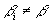 then the story becomes interesting. Each location will have a different demand depending on the parameter representing their cultural background. We propose to use an agent based computational model at this point, in order to understand how the equilibrium solution changes.
The Gibbs Sampler
The equation
,
which determines the static equilibrium in heterogeneous case becomes very difficult to solve numerically when the number of agents is large.
Constructing a Gibbs Sampler is a possible way out. To use it we have to adjust our model in the following way. From now on agents do not have expectations about their neighbors’ choices.
Remark. The fact that agents do not form expectations about their neighbors’ choices allows a different interpretation for 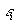’s: it can be explained as a reaction to the movie.
Instead we assume that the conditional distribution of agents’ choices given the choices of their neighbors is
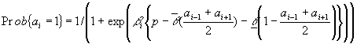
To approximate the joint distribution of the ai’s it is enough to construct the series of random states a1,…, aB using the Gibbs sampling. At every scan we update each ai from the corresponding conditional distribution treating ai-1 and ai+1 as given. Generalized law of large numbers ensures that empirical averages accurately approximate features of the joint distribution.
Dynamics
The dynamics of the system can be modeled in the following way.
Let the number of periods the movie runs be T.
Stage 0.
Assume that individual’s i "mood" i.e. probability distribution of the quality of the movie is given by
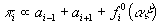,
where 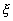 is a vector of external shocks: reviews, commercials, etc and  is the vector of corresponding coefficients. The conditional distribution of i-th individual’s choice will be the following
is the vector of corresponding coefficients. The conditional distribution of i-th individual’s choice will be the following
Use the Gibbs Sampler to approximate a joint distribution of choices among M0 = M individuals. Estimate the 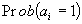 for every agent.
Stage 1.
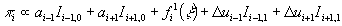
Similarly to the Stage 0 use the Gibbs Sampler to approximate a joint distribution of  ’s.
’s.
Stage 2.
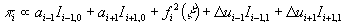 ....
The process repeats itself until one of the following conditions is met
Repeat from the Stage 1 B number of times.
Given the series of movie demand dynamics we can construct an average path of number of people who went to see the movie.
It would be interesting to do the calibration exercise for that model in order to find a combination of parameters, where our model generates behavior observed in he real life.
Extensions